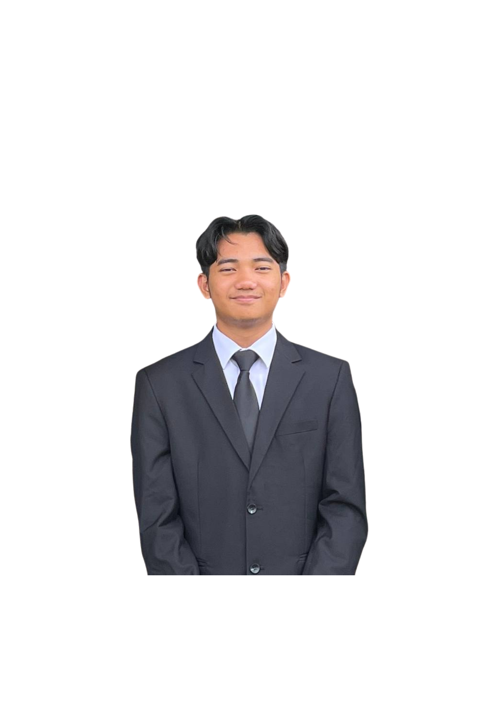

Personal Resume Website
Developed a personal resume website using HTML and CSS as part of the IMD 318 individual assignment. The website showcases personal information, education, skills and experience.

Diploma in Information Management
Universiti Teknologi MARA (UiTM)
I am an Information Management student at Universiti Teknologi MARA (UiTM). I am interested in information management, digital media, web design and creative content development.
I enjoy learning new skills, exploring creative ideas and improving my knowledge in technology. I am also interested in developing my communication, teamwork and problem-solving abilities through academic projects and practical experiences.
Studying Information Management with exposure to records management, information systems, database management and web development.
Completed secondary education and obtained the Sijil Pelajaran Malaysia qualification.
Developed a personal resume website using HTML and CSS as part of the IMD 318 individual assignment. The website showcases personal information, education, skills and experience.
Created digital posters, promotional materials and social media content using Canva for academic and faculty activities.
Assisted in programme preparation, promotional design, social media content and event coordination for the 10th International Library and Information Science Society Conference 2026.
Feel free to contact me for professional, academic or collaboration opportunities.